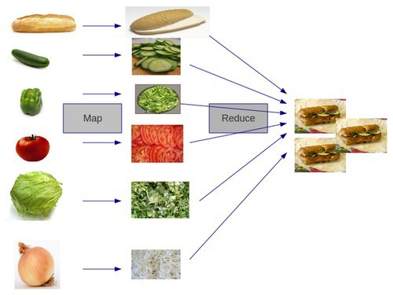

{-# LANGUAGE TupleSections #-}
{-@ LIQUID "--no-warnings" @-}
{-@ LIQUID "--short-names" @-}
{-@ LIQUID "--diff" @-}
{-@ LIQUID "--exact-data-cons" @-}
{-@ LIQUID "--higherorder" @-}
{-@ LIQUID "--automatic-instances=liquidinstances" @-}
-- Hidden code
module Reflection where
import Language.Haskell.Liquid.ProofCombinators
import Prelude hiding (sum, (++))
sillyProof :: Int -> Int -> Proof
appendPf :: [a] -> [a] -> [a] -> ()
{-@ infix ++ @-}
{-@ reflect ++ @-}
by = (?)
{-
thm :: [a] -> [a] -> [a] -> ()
thm [] ys zs = ([] ++ ys) ++ zs
==. ys ++ zs
==. [] ++ (ys ++ zs)
*** QED
thm (x:xs) ys zs = ((x:xs) ++ ys) ++ zs
==. (x : (xs ++ ys)) ++ zs
==. x : ((xs ++ ys) ++ zs)
==. x : (xs ++ (ys ++ zs)) ? thm xs ys zs
==. (x : xs) ++ (ys ++ zs)
*** QED
-}
Types As Theorems
The Refined Type ...
\[\reft{v}{b}{P}\]
... corresponds to the Theorem
\[\mathit{P}\]
Types as Theorems: Example
The Refined Type ...
{-@ type OnePlusOneEqualsTwo = {v:() | 1 + 1 = 2} @-}
... corresponds to the Theorem
\[1 + 1 = 2\]
Programs As Proofs: Example
The Program ...
{-@ easyProof :: OnePlusOneEqualsTwo @-}
easyProof = ()
... corresponds to a Proof that
\[1 + 1 = 2\]
Types As Theorems
The Refined Type ...
\[\bindx{n}{\Nat} \rightarrow \reft{v}{b}{P(n)}\]
... corresponds to the Theorem
\[\forall n \in \Nat.\ P(n)\]
Types as Theorems: Example
The Refined Type ...
{-@ type PlusCommutes = n:Int -> m:Int -> { n + m = m + n } @-}
... corresponds to the Theorem
\[\forall n, m.\ n + m = m + n\]
Programs As Proofs: Example
The Program ...
{-@ sillyProof :: PlusCommutes @-}
sillyProof n m = ()
... corresponds to a Proof that
\[\forall n, m.\ n + m = m + n\]
Types as Theorems, Programs as Proofs
Types
are
Theorems
Programs
are
Proofs
Those Proofs were Boring
Simple Arithmetic
Automatically proved by SMT Solver
Those Proofs were Boring
Simple Arithmetic
Automatically proved by SMT Solver
How about proofs about user-defined functions?
Beyond automatic SMT, but the user can write proofs
Theorems about Functions
{-@ reflect sum @-}
sum :: Int -> Int
sum n
| n <= 0 = 0
| otherwise = n + sum (n - 1)
How can we prove the the theorems
\(\mathit{sum}(1) = 1\) ,
\(\mathit{sum}(2) = 3\) ,
\(\mathit{sum}(3) = 6\) .
Refinement Reflection
The annotation
Automatically gives sum the type
sum :: n:Int -> {v:Int | v = if n == 0 then 0 else n + sum (n-1)}
Reflect Function into Output Type
The type of sum connects implementation and specification
sum :: n:Int -> {v:Int | v = if n == 0 then 0 else n + sum (n-1)}
Reflect Function into Output Type
The type of sum connects implementation and specification
sum :: n:Int -> {v:Int | v = if n == 0 then 0 else n + sum (n-1)}
Key Idea
Calling sum n reveals definition at n to refinement logic!
Reflection at Result Type
{-@ sum3 :: _ -> { sum 3 == 6 } @-}
sum3 _ = let s0 = sum 0 -- s0 :: {sum 0 = 0 }
s1 = sum 1 -- s1 :: {sum 1 = 1 + sum 0}
s2 = sum 2 -- s2 :: {sum 2 = 2 + sum 1}
s3 = sum 3 -- s3 :: {sum 3 = 3 + sum 2}
in () -- SMT connects the dots.
Key Idea
Calling sum n reveals definition at n to refinement logic!
Structuring Proofs as Calculations
Using combinators from ProofCombinators
{-@ sum3' :: _ -> { sum 3 = 6 } @-}
sum3' _ = sum 3
==. 3 + sum 2
==. 3 + 2 + sum 1
==. 3 + 2 + 1 + sum 0
==. 6
*** QED
Types as Theorems, Programs as Proofs
Types
are
Theorems
Programs
are
Proofs
Reusing Proofs: Functions as Lemmas
Proofs are functions
Reusing Proofs: Functions as Lemmas
Proofs are functions
Reuse by calling the function
Reusing Proofs: Functions as Lemmas
Proofs are functions
Reuse by calling the function
{-@ sum4 :: _ -> { sum 4 = 10 } @-}
sum4 _ = sum 4
==. 4 + sum 3
==. 4 + 6 ? sum3 () -- lemma { sum 3 == 6 }
==. 10
*** QED
? is a library operator (read ``because'')
Types as Theorems, Programs as Proofs
Types
are
Theorems
Programs
are
Proofs
Types as Theorems, Programs as Proofs
Types
are
Theorems
Programs
are
Proofs
Functions
are
Lemmas
Proof by Logical Evaluation
Long chains of calculations are tedious
Proof by Logical Evaluation
Long chains of calculations are tedious
Make the machine do the hard work!
A new algorithm to emulate computation in SMT logic
{-@ sum3auto :: _ -> { sum 3 = 6 } @-}
sum3auto _ = ()
{-@ sum4auto :: _ -> { sum 4 = 10 } @-}
sum4auto _ = ()
Proof by Induction
Lets prove the theorem
\[\forall n.\ \sum_{i = 0}^n i = \frac{n \times (n + 1)}{2}\]
Proof by Induction
Lets prove the theorem
\[\forall n.\ \sum_{i = 0}^n i = \frac{n \times (n + 1)}{2}\]
that is
\[\forall n \in \Nat.\ 2 \times \mathit{sum}(n) = n \times (n + 1)\]
Proof by Induction
\[\forall n \in \Nat.\ 2 \times \mathit{sum}(n) = n \times (n + 1)\]
{-@ sumPf :: n:Nat -> { 2 * sum n == n * (n + 1) } @-}
sumPf :: Int -> ()
sumPf 0 = 2 * sum 0
==. 0
*** QED
sumPf n = 2 * sum n
==. 2 * (n + sum (n-1))
==. 2 * (n + ((n - 1) * n)) ? sumPf (n - 1)
==. n * (n + 1)
*** QED
Q: What happens if we use the wrong induction?
Types as Theorems, Programs as Proofs
Types
are
Theorems
Programs
are
Proofs
Functions
are
Lemmas
Types as Theorems, Programs as Proofs
Types
are
Theorems
Programs
are
Proofs
Functions
are
Lemmas
Branches
are
Case-Splits
Types as Theorems, Programs as Proofs
Types
are
Theorems
Programs
are
Proofs
Functions
are
Lemmas
Branches
are
Case-Splits
Recursion
is
Induction
Theorems about Data
Recall the list append function:
(++) :: [a] -> [a] -> [a]
[] ++ ys = ys
(x:xs) ++ ys = x : (xs ++ ys)
Lets prove that the operator is associative
{-@ type AppendAssoc a = xs:[a] -> ys:[a] -> zs:[a]
-> { (xs ++ ys) ++ zs = xs ++ (ys ++ zs) }
@-}
Theorems about Data: Associativity of append
Lets write fill in a calculational proof:
{-@ appendPf :: AppendAssoc a @-}
appendPf xs ys zs = () -- Q: Can you help me fill this in?
Case Study: MapReduce
Chunk inputs, Map operation in parallel, and Reduce the results.
Case Study: MapReduce
Chunk inputs, Map operation in parallel, and Reduce the results.

Reduce Theorem
Description
If op is associative then reduce op xs == parallelReduce op xs
Theorem
reduceTheorem
:: op:(a -> a -> a) -- for any op-erator
-> xs:[a] -- for any collection xs
-> Assoc op -- if op is associative
-> {reduce op xs = parReduce op xs} -- then parReduce is ok!
Types as Theorems, Programs as Proofs
Types
are
Theorems
Programs
are
Proofs
Functions
are
Lemmas
Branches
are
Case-Splits
Recursion
is
Induction